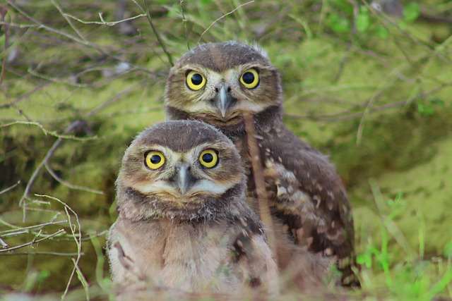
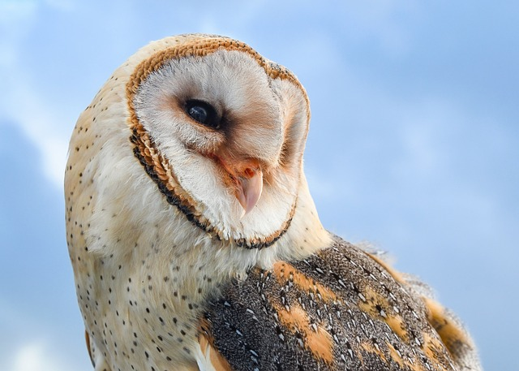
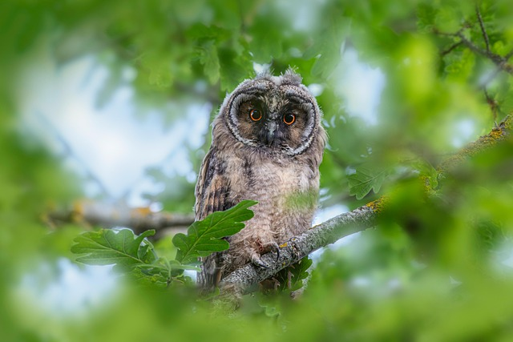
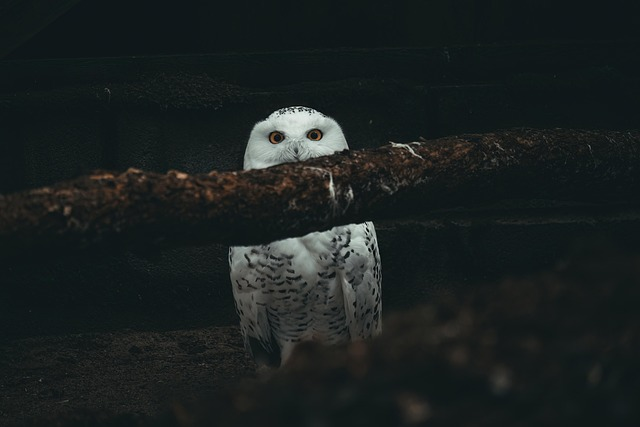
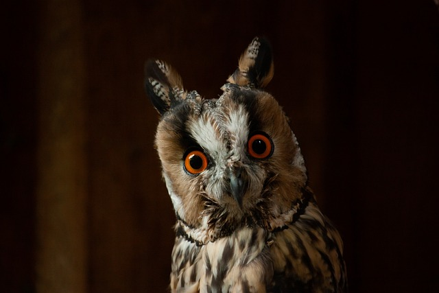
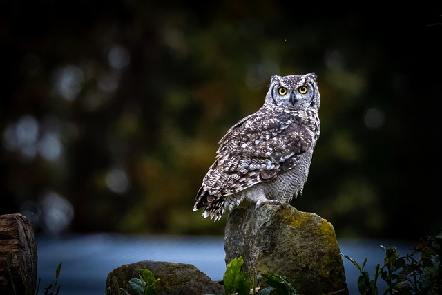
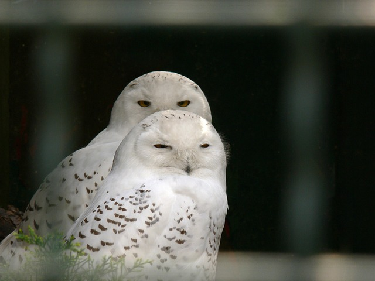
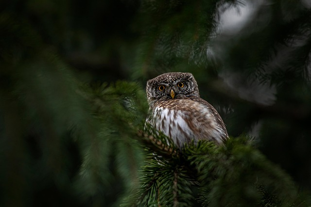
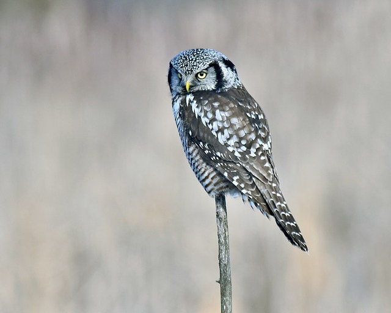

Na Asa Viva, nossa missão é proteger as aves e promover um maior
carinho e compreensão por essas criaturas incríveis. Toda semana,
compartilhamos 10 curiosidades fascinantes sobre uma ave específica
para ajudar você a conhecê-las melhor e se apaixonar por elas.
Explore nosso site para saber mais sobre nosso trabalho, entrar em
contato conosco ou descobrir como você pode contribuir para a
proteção das aves.
Você já se perguntou o que torna as corujas tão
especiais? Com sua beleza singular e aquele olhar penetrante, elas
são, sem dúvida, algumas das aves mais misteriosas e admiradas do
planeta. Abrace a curiosidade e descubra, a seguir, uma série de fatos
surpreendentes sobre esses caçadores noturnos!
1. Um Mundo de Corujas: Mais de 200 Espécies!
Existem mais de 200 espécies de corujas espalhadas por quase todo o
planeta! Esses mestres da noite habitam uma incrível variedade de
locais, desde florestas densas a desertos vastos, com uma única
exceção: você nunca encontrará uma coruja vivendo livremente na
gelada Antártica. A maior diversidade de corujas é encontrada em
regiões tropicais, especialmente na Ásia. E aqui no Brasil, somos
privilegiados por abrigar a Coruja-buraqueira e a Coruja-orelhuda,
duas das mais conhecidas!

2. A Coruja e a Sabedoria: Um Olhar Mítico
Você sabia que as corujas são, há séculos, símbolos universais de
sabedoria e conhecimento? Essa forte ligação vem de tempos antigos,
especialmente da mitologia grega, onde a deusa Atena, patrona da
sabedoria e da guerra estratégica, era sempre representada ao lado
de sua fiel coruja. Graças aos seus olhos penetrantes e à capacidade
de "ver" na escuridão, a coruja se tornou um ícone perfeito para a
inteligência e a reflexão profunda.

3. Um Dia Especial para as Corujas: 4 de Agosto!
Você sabia que essas aves noturnas fascinantes têm uma data só
delas? O dia 4 de agosto é marcado como o Dia Internacional da
Conscientização pelas Corujas! Essa data foi criada para chamar a
atenção do mundo para a importância de proteger esses seres
incríveis. É um lembrete para valorizarmos as corujas e garantirmos
que elas continuem a voar pelos nossos céus, ajudando a manter o
equilíbrio da natureza.

4. Mestres da Noite, mas Longe do Sobrenatural
A imagem da coruja na escuridão, com seu voo silencioso e pios
misteriosos, realmente a conecta ao reino noturno. E é por essa vida
majoritariamente ativa à noite, e por seus cantos em baixa
frequência que parecem vir do além, que as corujas são
frequentemente associadas ao oculto e a mitos sobrenaturais. No
entanto, não há nada de místico ou mágico nelas! São simplesmente
aves de rapina perfeitamente adaptadas para caçar sob o manto da
noite, com sentidos aguçadíssimos para sobreviver.

5. Olhos Tubulares: A Visão Secreta da Coruja
Prepare-se para um fato surpreendente: os olhos da coruja não são
como os nossos "globos oculares"! Na verdade, eles têm um formato de
tubo e são completamente fixos, o que impede a coruja de movê-los
dentro das órbitas. Essa característica única proporciona uma visão
binocular excepcional, focada intensamente em suas presas e
aumentando drasticamente a percepção de profundidade. É como ter um
super telescópio natural, feito sob medida para a caça noturna!

6. O Segredo Auditivo: Orelhas Assimétricas
Você sabia que as corujas escondem um superpoder auditivo? Muitas
espécies possuem orelhas assimétricas, o que significa que uma
orelha é posicionada um pouco mais alta ou mais baixa que a outra!
Essa característica peculiar é um verdadeiro trunfo na caça noturna.
Ela permite que a coruja detecte com precisão a direção exata de um
som, criando um "mapa" sonoro 3D em sua mente para localizar presas
no escuro total.

7. Corujas: Quebrando o Mito da Noite Eterna
Embora a maioria das corujas seja conhecida por sua atividade
noturna, nem todas se restringem às sombras! A verdade é que a
frequência com que essas aves são avistadas durante o dia varia
conforme a fartura de alimento e o seu lar. Em períodos desafiadores
ou quando a comida se torna escassa, elas podem sair para caçar a
qualquer momento, visando garantir a própria subsistência. Um
exemplo fascinante é a coruja-das-neves, que prefere dormir à noite
e sai em busca de alimento sob a luz do dia.

8. Um Giro Incrível: O Pescoço da Coruja!
Prepare-se para ficar impressionado: as corujas possuem uma
habilidade única de girar seus pescoços em incríveis 270 graus para
cada lado! Isso mesmo, quase uma volta completa! Como seus olhos são
fixos e não se movem, essa superflexibilidade no pescoço é
essencial. Ela permite que a coruja tenha uma visão panorâmica
completa do ambiente, identificando presas e perigos sem precisar
mover o corpo. É uma adaptação fascinante para sobreviver!

9. Audição Afiada: O Raio X Sonoro da Coruja-Gavião
Você consegue imaginar escutar um pequeno som a um quilômetro e meio
de distância? A Coruja-Gavião possui uma audição tão extraordinária
que consegue detectar uma simples ratazana a incríveis 1,5
quilômetros de distância! Essa capacidade supersônica permite que
ela localize suas presas com precisão cirúrgica, mesmo em meio à
escuridão ou sob a neve. É um verdadeiro raio-x sonoro, essencial
para essa caçadora implacável.

10. Corujas: Viajantes do Tempo com 58 Milhões de Anos!
Prepare-se para uma viagem no tempo: as corujas são aves realmente
antigas! Existem registros fósseis com mais de 58 milhões de anos,
provando sua existência longínqua. Impressionante, não é? Esses
achados indicam que essas aves noturnas surgiram em nosso planeta
logo após a grande extinção que pôs fim aos dinossauros. É
fascinante pensar que, enquanto a Terra se recuperava de uma era
gigantesca, as corujas já estavam ali, adaptando-se e prosperando em
um mundo em transformação.